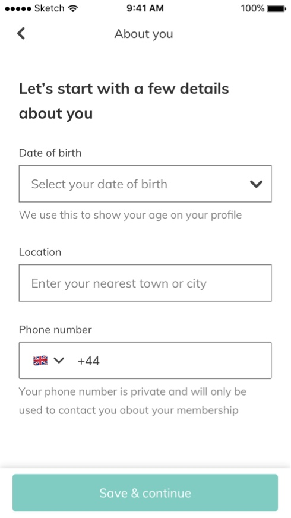
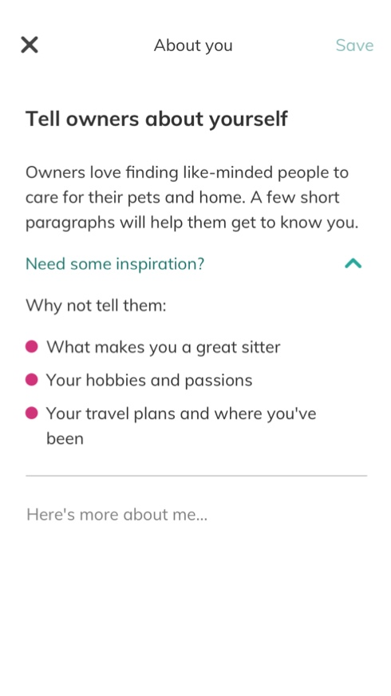
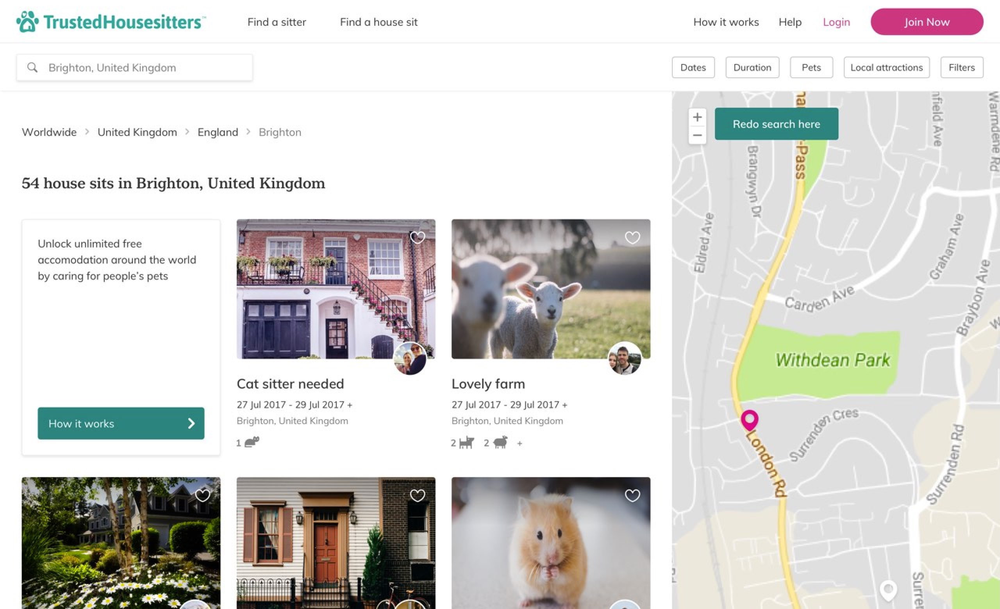
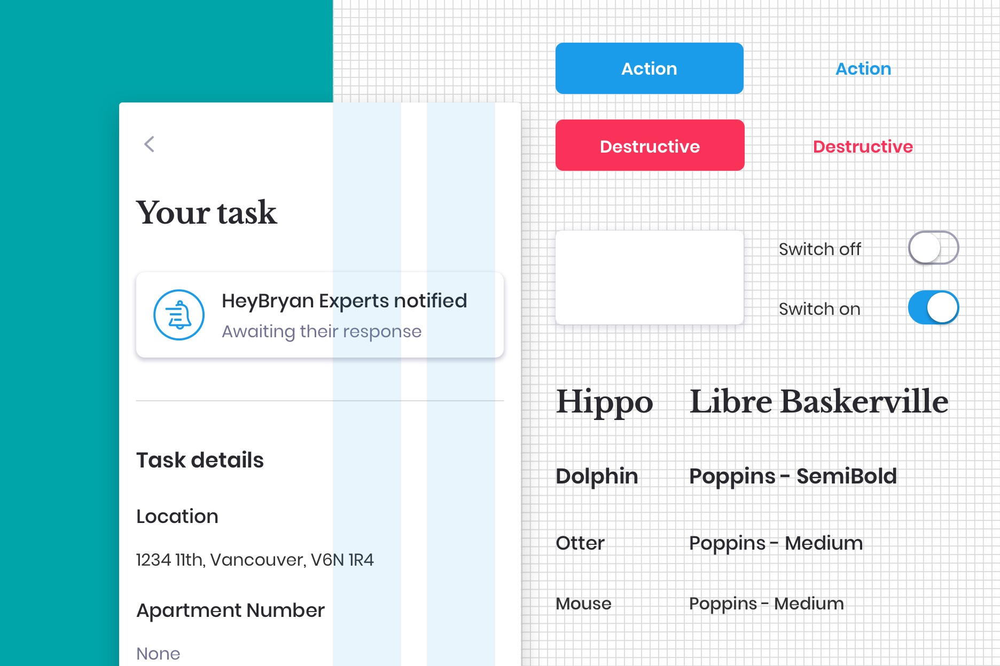
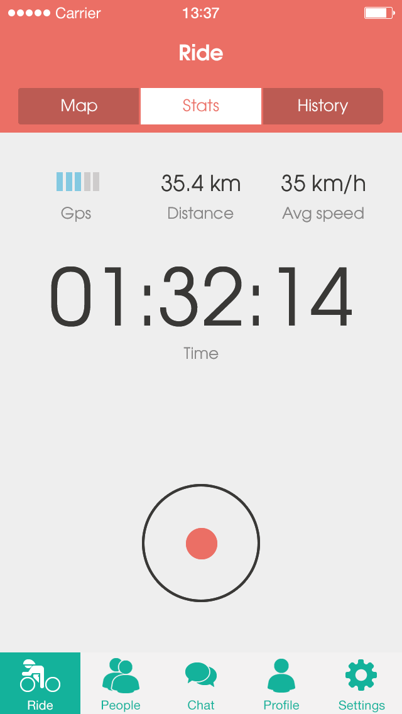
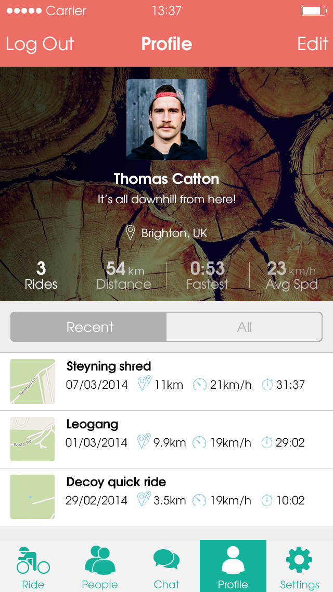
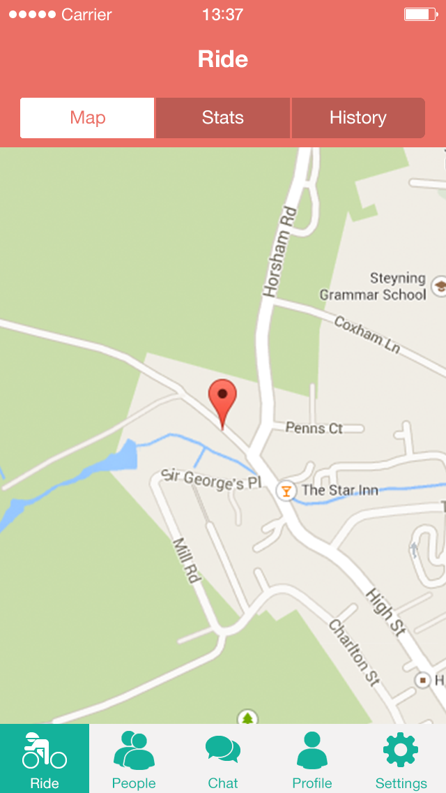

Projects
About
Hello! I’m
Ken
, a product designer who connects people with digital solutions and services.
Scroll to explore


App user onboarding
TrustedHousesitters

Redesigning the web experience
TrustedHousesitters

Design system
HeyBryan



A cycling app
University project